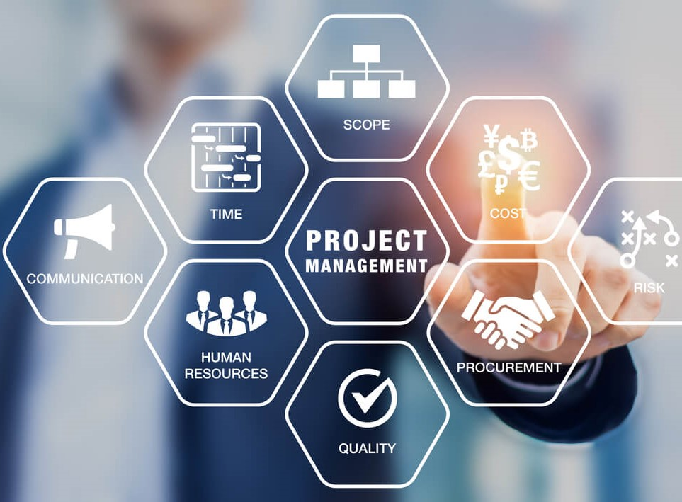
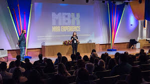
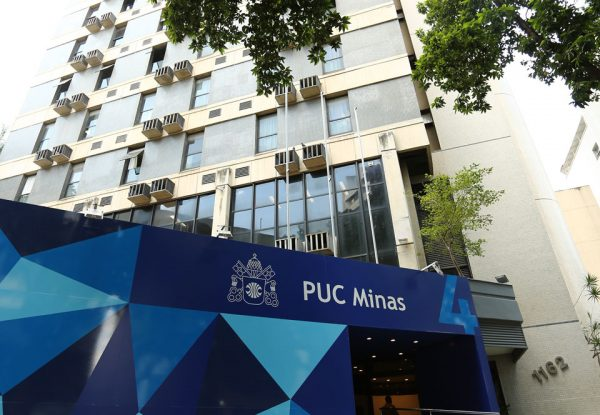

FGV Educação Executiva
R$25.344,05 até
R$31.671,00
educacao-executiva.fgv.br
Entenda como e onde cursar Gerência de Projetos.

Gestão de Projetos é a aplicação de conhecimentos, habilidades, ferramentas e técnicas para planejar, executar e controlar atividades relacionadas a um projeto, com o objetivo de alcançar metas específicas dentro de prazos, orçamentos e recursos definidos. Envolve a coordenação de diversas etapas, desde a definição dos objetivos do projeto, a elaboração de um plano detalhado, a alocação de recursos, a gestão de riscos, até o monitoramento e controle do progresso para garantir que os objetivos sejam alcançados. A gestão de projetos é utilizada em diversos setores e indústrias para gerenciar iniciativas que vão desde o desenvolvimento de novos produtos e serviços até a implementação de mudanças organizacionais ou tecnológicas. Ela busca maximizar a eficiência e a eficácia na entrega de resultados, garantindo que os projetos sejam concluídos com sucesso, atendendo às expectativas dos stakeholders e contribuindo para os objetivos estratégicos da organização. A gestão de projetos é fundamental em diversas áreas, como tecnologia, engenharia, construção, marketing e saúde, pois ajuda a assegurar que os projetos sejam entregues dentro dos parâmetros definidos, atendendo às expectativas dos stakeholders e contribuindo para o sucesso organizacional.
 No curso de
Gestão de Projetos, os alunos aprendem a planejar, executar, monitorar e encerrar projetos
de forma eficaz, utilizando metodologias e ferramentas específicas da área.
O currículo geralmente abrange tópicos como planejamento estratégico, gerenciamento de
escopo, cronograma, orçamento, qualidade e riscos, além de habilidades em liderança,
comunicação e negociação.
Também são ensinados métodos ágeis, como Scrum e Kanban, e o uso de softwares
especializados, como MS Project.
As características do curso incluem uma abordagem prática, com estudos de caso e simulações,
visando preparar os estudantes para os desafios reais do mercado de trabalho.
O curso também enfatiza a importância da ética, da responsabilidade social e da
sustentabilidade na gestão de projetos, preparando os alunos para tomar decisões informadas
e alinhadas com os objetivos estratégicos das organizações.
No curso de
Gestão de Projetos, os alunos aprendem a planejar, executar, monitorar e encerrar projetos
de forma eficaz, utilizando metodologias e ferramentas específicas da área.
O currículo geralmente abrange tópicos como planejamento estratégico, gerenciamento de
escopo, cronograma, orçamento, qualidade e riscos, além de habilidades em liderança,
comunicação e negociação.
Também são ensinados métodos ágeis, como Scrum e Kanban, e o uso de softwares
especializados, como MS Project.
As características do curso incluem uma abordagem prática, com estudos de caso e simulações,
visando preparar os estudantes para os desafios reais do mercado de trabalho.
O curso também enfatiza a importância da ética, da responsabilidade social e da
sustentabilidade na gestão de projetos, preparando os alunos para tomar decisões informadas
e alinhadas com os objetivos estratégicos das organizações.
A formação em Gerência de Projetos é fundamental para profissionais que desejam liderar e gerenciar equipes, processos e recursos com eficiência. No Brasil, diversas instituições de ensino se destacam por oferecer programas de qualidade, alinhados com as melhores práticas e demandas do mercado. Nesta seção, apresentamos algumas das principais redes de ensino que proporcionam uma base sólida e atualizada para quem busca se especializar nesta área.
R$25.344,05 até
R$31.671,00
educacao-executiva.fgv.br
R$20.252,20 até
R$46.241,28
ibmec.br
R$12.420,1 até
R$13.084,65
mbauspesalq.com
R$5.000,00 até
R$6.000,00
pucminas.br/PucVirtual
Em um mundo empresarial cada vez mais dinâmico e competitivo, a habilidade de gerenciar projetos
com eficiência torna-se crucial para o sucesso profissional.
Acesse
o site da FGV aqui.
A gestão de projetos é uma ferramenta muito importante para garantir a eficácia de novos processos em uma empresa. O curso Gestão de Projetos proporciona o entendimento da relação íntima existente entre a estratégia das organizações e os projetos. Além disso, o curso apresenta e relaciona os processos de planejamento, execução, monitoramento e controle de projetos.
- elaborar projetos de maneira tecnicamente fundamentada e com base em boas práticas;
- gerenciar projetos de maneira tecnicamente fundamentada e com base em boas práticas;
- identificar os fatores condicionantes do sucesso ou do fracasso de um projeto;
- analisar os domínios e princípios do gerenciamento de projetos, adequando os seus modelos, papéis e artefatos.
- diagnosticar o tipo de contexto organizacional para aplicação de métodos preditivos, ágeis e híbridos
Profissionais que querem aplicar a mentalidade e as ferramentas de Gestão de Projetos na sua própria área de atuação ou ingressar na carreira de projetos.
A metodologia do curso está fundamentada na interação entre teoria e prática, com o objetivo de desenvolver nos alunos o pensamento crítico e habilitar a busca por soluções, tanto nas atividades atuais quanto nas futuras, construindo o conhecimento para encarar desafios ao longo da carreira profissional. Temos uma equipe de corpo docente diversificada, que atua em diferentes campos do saber e organizações, e que tem paixão por compartilhar o conhecimento com os alunos!
Em um mundo empresarial cada vez mais dinâmico e competitivo, a habilidade de gerenciar projetos
com eficiência torna-se crucial para o sucesso profissional.
Acesse o site da IBMEC aqui.
O MBA em Gestão de Projetos do Ibmec é um curso de pós-graduação que surge como um farol para aqueles que buscam não apenas entender, mas dominar as complexidades da gestão de projetos.
Proporcionar busca constante pela excelência na formação de profissionais capazes de liderar e transformar projetos de maneira inovadora, utilizando como referência o Guia PMBok e metodologias ágeis.
Profissionais de diversas áreas que buscam aprimorar suas habilidades gerenciais por meio de experiências e conhecimento prático e teórico, ampliando suas possibilidades no mercado de trabalho.
Com metodologia que se antecipa ao mercado, o Ibmec utiliza aulas dinâmicas, com atividades práticas, conduzidas por professores atuantes no mercado que estimulam a construção de network.
Ao
ingressar no MBA em Gestão de Projetos do Ibmec, os alunos podem esperar
uma experiência educacional enriquecedora e orientada para o
desenvolvimento de habilidades práticas e estratégicas.
PMBOK
Conteúdo construído com base nas premissas da última edição do PMBOK,
porém não se limita ao livro e traz diferentes perspectivas com foco no
melhor aproveitamento dos alunos.
Networking
Rede de relacionamentos, debates sobre as demandas do mercado e
palestras (lives), podcasts exclusivos com destacadas lideranças
empresariais.
Curso 100% atualizado
Atualizamos constantemente nossa matriz curricular para garantir que
você está tendo acesso a um conteúdo atual e significativo.
 Online
O primeiro modelo de ensino fornece mobilidade e flexibilidade com aulas
100% online, com acesso à materiais em plataformas digitais e interação
através de fóruns e chats.
Online
O primeiro modelo de ensino fornece mobilidade e flexibilidade com aulas
100% online, com acesso à materiais em plataformas digitais e interação
através de fóruns e chats.
Ao Vivo
Aulas ao vivo em tempo real via videoconferência. Acesso de qualquer
lugar com internet. Interatividade com professores e colegas em tempo
real, com perguntas, discussões e muito mais.
Presencial
Ensino presencial tradicional. Aulas em salas de aula com interação com
colegas e professores. Aulas expositivas, discussões, trabalhos em grupo
e atividades práticas
Em um mundo empresarial cada vez mais dinâmico e competitivo, a habilidade de gerenciar projetos
com eficiência torna-se crucial para o sucesso profissional.
Acesse
o site da USP aqui.
Nosso mundo está em constante transformação e precisa de profissionais capazes de conduzir as
equipes e organizações em direção à inovação na economia de projetos. As habilidades e
ferramentas de Gestão de Projetos são imprescindíveis para quem quer crescer na sua própria
área de atuação ou ingressar nessa carreira do futuro. Especialize-se com o MBA em Gestão de
Projetos USP/Esalq, um curso online, com aulas ao vivo e interativas, em linha com as boas
práticas do PMBOK® 7ª edição.
Pré-requisito: para ingresso nos cursos dos MBAs USP/Esalq o candidato deve possuir diploma
de curso superior. Não é necessário formação ou atuação anterior na área de Gestão de
Projetos.
Invista em atualização e conhecimento para se destacar no mercado de trabalho. A Gestão de Projetos é uma tendência e conhecer as diferentes abordagens (preditiva, adaptativa/ágil, híbrida), técnicas e ferramentas garante o reconhecimento e a relevância que você precisa para uma carreira de sucesso.
O curso está estruturado em 3 módulos: (1) Técnico, (2) Gestão de Pessoas e Liderança e (3) Estratégia e Negócios. Sendo assim, o MBA em Gestão de Projetos USP/Esalq vai além das habilidades técnicas e desenvolve também as habilidades interpessoais e de liderança e a visão de negócios, características que fazem toda a diferença para um profissional de projetos eficaz. Aprenda a construir um contexto ágil (não adianta mudar o nome da equipe para squad e fazer sprints sem conseguir aplicar de fato a abordagem ágil!), utilizar o scrum, definir metas e gerenciá-las baseadas no OKR, desenvolver seu time de projetos e fazer entregas de real valor para o negócio.
- Compreender a natureza dos problemas a serem resolvidos pelo projeto e escolher a abordagem mais adequada
- Diferenciar as abordagens preditiva e adaptativa/ágil e combiná-las quando necessário
- Aplicar a abordagem e ferramentas coerentes com a natureza dos seus projetos
- Gerenciar um projeto do início ao fim, gerenciando o time de projetos e garantindo as entregas de valor para o negócio
- Ampliar seu nível de autoconhecimento, gestão das emoções e de relacionamentos interpessoais
- Promover a mudança e gerenciar conflitos
- Construir e gerir equipes de projetos de alto desempenho
- Ter visão de negócios e tomar decisões coerentes com o contexto organizacional e do projeto
Profissionais que querem aplicar a mentalidade e as ferramentas de Gestão de Projetos na sua própria área de atuação ou ingressar na carreira de projetos.
A metodologia do curso está fundamentada na interação entre teoria e prática, com o objetivo de desenvolver nos alunos o pensamento crítico e habilitar a busca por soluções, tanto nas atividades atuais quanto nas futuras, construindo o conhecimento para encarar desafios ao longo da carreira profissional. Temos uma equipe de corpo docente diversificada, que atua em diferentes campos do saber e organizações, e que tem paixão por compartilhar o conhecimento com os alunos!
O curso ensina tanto a abordagem preditiva quanto ágil?
Sim, o MBA em Gestão de Projetos cobre amplamente as metodologias preditivas, como
cascata, e as ágeis. Quem participa do curso aprende a discernir os contextos e
fases de projetos em que cada metodologia é mais adequada. Além disso, o corpo
docente se dedica a ensinar a aplicação prática dessas abordagens nas diversas áreas
de um projeto e destaca a importância de métodos híbridos, que combinam
características preditivas e ágeis.
Que tipos de conhecimento vou obter nesse MBA?
O MBA em Gestão de Projetos USP/Esalq vai além da técnica, diferenciando-se de
outros cursos disponíveis no mercado. Ele é estruturado em 3 módulos: (1) Técnico,
(2) Gestão de Pessoas e Liderança e (3) Estratégia e Negócios. Quem participa do
curso aprenderá sobre gerenciamento de projetos preditivos, abordando temas como
Integração, Escopo, Cronograma, Custos, Qualidade, Recursos, Comunicação, Riscos,
Stakeholders, Aquisições, e sobre o planejamento e condução de projetos ágeis,
incluindo Scrum, Lean, Trello, Kanban, dentre outras metodologias e ferramentas.
Adicionalmente, são aprofundados temas como Autoconhecimento e Diferenças
Individuais, Liderança, Gestão de Equipes, Gestão da Mudança, Estratégia, Inovação,
Design Thinking, Cultura Organizacional e Cultura voltada ao Ágil. Nosso curso se
propõe a oferecer formação abrangente e atualizada para profissionais que já atuam
ou pretendem atuar com gestão de projetos.
Eu ainda não trabalho diretamente com projetos. Esse MBA também é para
mim?
O MBA em Gestão de Projetos é ideal para quem aspira atuar nessa área. Mesmo sem
experiência prévia, quem participa do curso pode compreender e começar a praticar.
As aulas ao vivo promovem atividades em grupo, possibilitando não apenas a fixação
dos conceitos, mas também a oportunidade de conexão e interação com diversos
profissionais que estão na mesma jornada. Isso enriquece a troca de experiências e
amplia a rede de contatos. O curso é indicado para quem já tem alguma relação com a
gestão de projetos, mas também para aqueles que visam dar os primeiros passos nessa
carreira, seja em organizações ou em projetos pessoais
Quais são os diferenciais do MBA USP/ESALQ de Gestão de Projetos?
As aulas são transmitidas ao vivo, possibilitando que nosso corpo docente, formado
por acadêmicos renomados da USP e profissionais de mercado, compartilhe
conhecimentos e experiências atuais, podendo interagir e responder a perguntas em
tempo real. Durante as transmissões, um time de tutores altamente qualificado está à
disposição na plataforma online, esclarecendo dúvidas e incentivando a troca de
experiências entre participantes. Atividades podem ser desenvolvidas em pequenos
grupos, promovendo reflexões e a aplicação dos conceitos discutidos. Para quem não
pode acompanhar ao vivo ou deseja revisar os conteúdos, todas as aulas ficam
gravadas e podem ser assistidas a qualquer momento, quantas vezes se desejar.
Adicionalmente, ao final de cada módulo, são oferecidos de forma gratuita, workshops
com enfoque prático em ferramentas e técnicas de gestão de projetos. Buscando
incluir estudantes com deficiência auditiva e/ou de língua estrangeira,
disponibilizamos materiais e tradução simultânea de legendas em Português, Inglês e
Espanhol. E ao final da jornada, é concedido o certificado da prestigiada
Universidade de São Paulo.

O MBA é um curso preparatório para as certificações do PMI?
Embora o MBA se baseie na estrutura do PMBOK e tenha estudantes que conquistam
certificações do PMI, não é esse o nosso propósito, que vai além de ser um curso
preparatório. Temos como foco enriquecer a compreensão de estudantes sobre os
pilares do Triângulo de Talentos, relacionado às abordagens adaptáveis de trabalho,
diversidade de ferramentas técnicas, habilidades comportamentais e uma sólida visão
de negócios (para aqueles com interesse específico em certificações, sugerimos um
curso preparatório CAPM/PMP, mas que não faz parte do MBA).
Para que serve o módulo introdutório?
O módulo introdutório permite que os alunos compreendam os conceitos fundamentais,
terminologias e princípios básicos relacionados ao assunto do curso. Além disso, as
aulas introdutórias ajudam a nivelar ou reforçar o conhecimento dos alunos na área,
e garantem que todos estejam na mesma página antes de prosseguir para tópicos mais
complexos.
O módulo introdutório é obrigatório? (Frequência, faltas e provas)
Não há obrigatoriedade. A frequência não será contabilizada e será disponibilizada
apenas avaliações do corpo docente. Entretanto, os conteúdos apresentados são
fundamentais para obter conhecimentos necessários para acompanhar o curso. As aulas
do módulo introdutório acontecem às sextas-feiras durante o primeiro mês.
Os avanços das transformações tecnológicas demandam organizações e profissionais que se adaptem
com rapidez às mudanças no mercado.
Acesse
o site da PUC aqui.
O curso segue as diretrizes do Guia PMBOK ® - sétima edição, e tem como diferencial proporcionar ao aluno o desenvolvimento de competências necessárias para que ele possa agir de forma proativa em seu ambiente de trabalho, desenvolvendo uma mentalidade de gestão colaborativa e agilidade.
Formar especialistas em Gerenciamento de Projetos em acordo com o padrão do PMI (Project Management Institute) difundido pelo PMBOK, capazes de articular pensamento estratégico e prático sobre a gerência de projetos, destacando o caráter multidisciplinar ao envolver temas e assuntos de distintas áreas como administração, engenharia, economia, recursos humanos, marketing e finanças.
Apresentar casos práticos de gerenciamento de projetos para apoiar os alunos na condução de seus projetos no contexto organizacional de constante mudança e inovação dos produtos e serviços e suas operações.
Apresentar ferramentas contemporâneas de gerenciamento de projetos baseadas nos conceitos descritos no PMBOK® e softwares de gerenciamento de projetos.
Proporcionar que o aluno aplique a metodologia de gerenciamento de projetos ao longo do curso mediante o uso e uma ferramenta.
Dirigido a executivos, profissionais de nível superior de diversas áreas como engenharias, administração, informática, entre outras, que exerçam ou que aspirem exercer qualquer função executiva na área de gerenciamento de projetos de sua organização, bem como àqueles que queiram ou necessitem aprofundar tais fundamentos.
Consideramos horas de aprendizagem o tempo que o aluno gasta para a realização das atividades objetivas, para a realização das atividades abertas, para a leitura de textos, para a participação em fóruns, para assistir as videoaulas e para se preparar para as provas, sempre com a supervisão dos professores.

Para fazer a sua inscrição, você deverá acessar: vemprapuc.pucminas.br, preencher seus dados e efetuar o pagamento da primeira parcela. Após esse procedimento, você receberá um e-mail com o link para enviar seus documentos, aderir ao termo, retirar o contrato e emitir a declaração de inscrição. Documentos necessarios: RG ou CNH (frente e verso) e Diploma da graduação (frente e verso)
Você só deverá se inscrever nesse curso caso já tenha colado grau na sua graduação. Este é um requisito previsto na Lei nº 9.394, e previsto também no Contrato de Prestação de Serviços ( clique aqui para ter acesso). A conferência desse requisito será feita pela instituição após o processamento da sua matrícula e caso seja identificada alguma irregularidade ela será cancelada a qualquer tempo (conforme cláusula 4.5.1 do contrato), e não haverá direito ao recebimento de reembolso dos valores pagos.